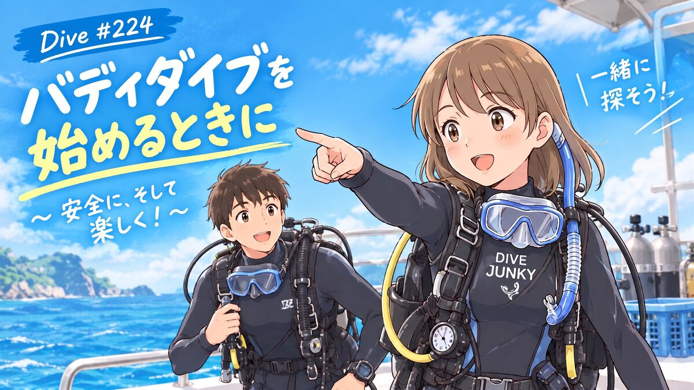

The road Orz passed by 2026 年 09 月
09 月 29 日 ( 火 )


以下、うみトモというアプリ内のスレッドで書いた内容になります。
初めてバディダイブを行う場合、以下を最重要項目として考えてください。
1．二人にとって簡単なことから始める
1.1 ナビゲーションはシンプルに
最初は、直線的に行って戻るだけのルートがおすすめです。
例えば東西・南北に伸びる根を行って戻るだけなら、ナビゲーションに余裕が生まれます。余裕が生まれれば、安全性にも、海を楽しむことにも余裕ができます。
海底にガイドロープが張られているなど、迷いにくいポイントから始めるのもよいと思います。
1.2 Open Water の講習で潜ったような、すぐに安全を確保できる海域から
- 穏やかである
- エントリー・エキジットが楽
- 水深が浅く、水面に戻りやすい
最初はこういう条件の場所を選びましょう。
2．「エントリーしない」という判断
これが一番大切かもしれません。
海を見て「今日は無理だ」と感じたなら、その気持ちに正直になってください。
二人で「今日は潜らない」という判断をする。
そして、お互いに「やめよう」と率直に言えること。
言い古された言葉ですが
【行く勇気よりも退く勇気のほうがよっぽど大切】
です。
3．「中止して撤退する」という判断
これも非常に大切です。
潜ってから、
「なんだか不安だ」
「体調がおかしい」
「今日は中止したほうがよさそうだ」
と思ったら、その場で原因がはっきりしなくてもバディに伝えてください。
そして二人でダイビングを中止する。
「バディが不調は自分自身の安全管理上の問題」
くらいの認識を持っておくとよいと思います。
4．Open Water で学んだことを全部使う
- バディ・プレダイブチェック
- 緊急時のフォロー
- バディと自分自身の異常モニター
- エントリー・エキジット時の協力
- 楽しみを分かち合うこと
- その他、Open Water のマニュアルに書かれていること
資格を取ったら終わりではなく、そこからが実際のバディダイブです。
5．ちょっと面白いこと
バディダイブを始めると、そのうち面白いことに気が付きます。
インストラクターやダイブマスターがやっていることって、実はバディダイブの延長なんです。
もちろん、インストラクターやダイブマスターは高度なトレーニングを受け、グループ管理なども学んでいます。
でも、その根っこにあるのは、Open Water で学んだ
「自分とバディの安全を確認しながら、一緒にダイビングを楽しむ」
ということなんですよね。
特別な何かが突然現れるのではなく、Open Water の延長にある。
そこがバディダイブの面白いところだと思います。
またバディダイブを始めるとレスキューを受けたくなります。
6．最後に
安全に！！
そして、二人で楽しんできてください！！
7．付録 A
以下、ぼくのWebサイトにぼく自身がバディダイブについてまとめたものです。
大半はWeb日記上の回想なので、ちょっと読みにくいかもしれません。その点はご容赦ください。
【バディダイブの潜水中のプロセス ～エントリーからエキジットまで～】
https://orzbruford.jp/202609/17.html
バディダイブのエントリーからエキジットまでのプロセスをフローチャートにしています。
特に、水中で自分とバディの何を見ているのか、何をチェックしているのかをフローチャートの中に描いていますので、よかったら参考にしてください。
【ぼくがバディに求めるもの】
https://orzbruford.jp/202508/14.html#2025081401
「バディってなんなの？」ということをまとめています。
これは相手だけではなく、自分自身もバディなんだ、という話でもあります。
【バディ・ダイビング準備リスト【私案】】
https://mitsugu.github.io/BuddyDiving/
これは、ぼくが Open Water I の頃からバディダイブのときに無意識にやっていたことを、無理やり整理してリストにしたものです。
参考程度に眺めるだけでもよし、実際にパウチして使うもよし。自由に使ってください。
【ダイバーとしての個人史 #2 バディについて (1)】
https://orzbruford.jp/202601/10.html#2026011001
バディシリーズは (6) まであります。
この辺りは、ぼくのバディ観が生まれていく過程を書いたものなので、How to として読む必要はないかもしれません。
8 付録 B : 最後のメッセージ
それまでバディダイブをしてこなかった人がバディダイブを始めると、途端に自信を失うことがあります。
自信を失うのはぜんぜんＯＫです。だってそれは
【まだまだ自分に伸びしろがたくさんある！！】
ってことの発見なので。
伸びしろを埋めていくと、また新しい伸びしろがでてくるので、むちゃくちゃ楽しいです。
伸びしろ攻略を楽しんでください。
- Category :
- #Records of Orz's Road
- #ダイビング
- #スクーバダイビング
- #バディダイブ
- #せフルダイブ